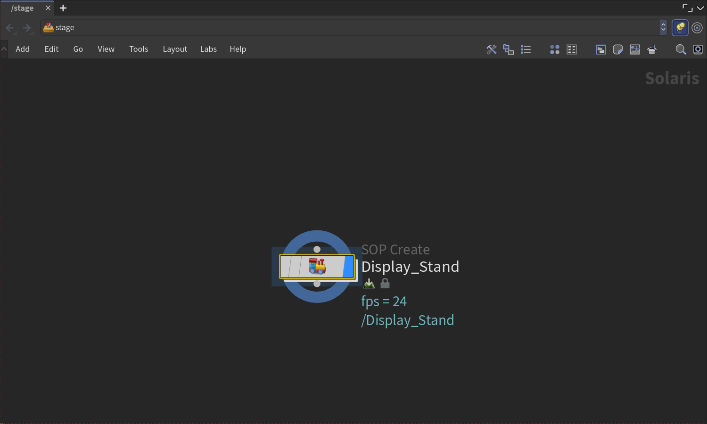
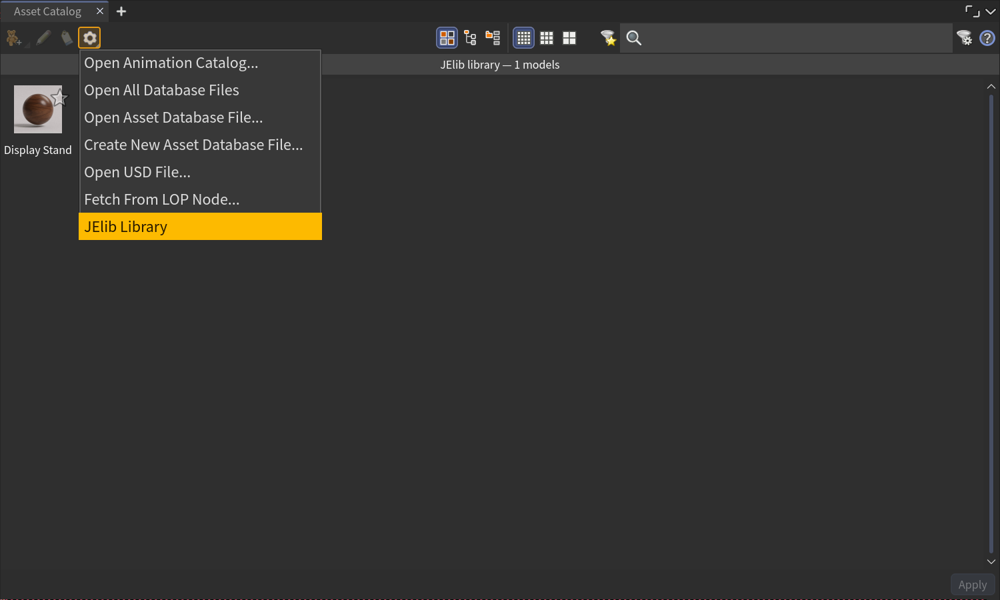

Working in Solaris (USD)
JElib works natively in Solaris. Drop an asset into a LOP network / stage and it builds USD — references, materials, and instancing all native to the stage — instead of the SOP-based setup you'd get in OBJ.
It follows your context
Dropping into a Solaris network builds USD automatically — JElib reads the network editor you dropped into, so a multi-asset drop keeps landing in the same stage. Dropping into OBJ builds the classic geo network instead.
Import Into Active Network
The stage is used when Import Into Active Network (Preferences → Import → Advanced) is on. Turn it off to always create a fresh top-level container regardless of where you drop.

Bringing non-USD geometry into the stage
Models that aren't already USD (see Supported file formats) can enter the stage several ways. Set the default in Preferences → USD → USD Import Mode; override per import in the preview panel's LOP Import:
| Mode | What lands in the stage | Writes to disk? |
|---|---|---|
| Auto (default) | Bakes a .usd sidecar and references it if the asset folder is writable; otherwise falls back to SOP Create |
Only if writable |
| SOP Create | A sopcreate LOP wrapping the import chain |
No |
| Component Builder | A live, editable componentgeometry → componentoutput chain |
No |
| Bake .usd | Always writes <asset>/usd/<name>.usd and references it |
Yes |
| Use Cached USD | References an existing baked .usd as-is — never rebuilds |
No |
The preview panel labels these USD Auto Import · SOP Create · Component Builder · Build USD · Use Cached USD; a rigged/animated FBX swaps the last two build modes for USD Skel and Bake USD — see Animation & sequences.
Only the baking modes (Bake, and Auto when it can write) produce a reusable .usd
on disk — SOP Create and Component Builder keep everything live in the
scene, which is heavier and can't be reused across drops.
Reference or sublayer
Preferences → USD → USD Import As controls how the asset composes into the stage:
- Reference (default) — a
referenceLOP brings the asset in under its own prim,/<asset_name>. The standard way to bring in a contained asset. - Sublayer — a
sublayerLOP merges the file's own layer structure into the stage as-is.
Native USD assets
A .usd / .usdc / .usda / .usdz asset is referenced directly — no baking,
no SOP import — following your Reference/Sublayer choice. Multi-variant USD plants
come in as a single reference with one prim per variant.
Baking & reusing caches
When a mode bakes, JElib writes to <asset>/usd/<name>/… next to the source by
default. Two preferences change and reuse that:
- Cache to $HIP — write caches under
$HIP/usd/…instead, handy when the asset folder is read-only or you'll collect everything with the hip later. (Save your scene first — an unsaved hip falls back to the asset folder with a warning.) - Use Baked Cache — when an up-to-date
.usdcache already exists, reference it directly instead of rebuilding the Component Builder chain. Much lighter for production scenes. - Clean Up After Bake — after baking, remove the Component Builder nodes and leave just the reference. Re-baking then needs a fresh import.
- Proxy Detail (%) — how much the Component Builder reduces the proxy
representation when baking. Doesn't apply to a
$Fsequence bake — those author no proxy.
Animated sources bake animated
A $F sequence bakes as a time-sampled USD over its own frame range, not a
frozen first frame, and only re-bakes when its frames change — with no proxy or
collision representation (static assets only). A rigged FBX bakes as a real
UsdSkel component, with its own proxy. Either can Loop for the whole scene
range. See Animation & sequences.
Materials in the stage
JElib builds a materiallibrary and wires a material assignment onto the imported
prims for you — per renderer, the shader lives in that library
(rs_usd_material_builder for Redshift, octane_solaris_material_builder for
Octane, an mtlx subnet for Karma). See Renderers & materials for
what gets wired.
Viewport preview
Redshift and Octane materials also get a UsdPreviewSurface so they shade in the GL/Storm viewport. Karma's MaterialX shaders preview natively, so they don't get one — a non-Karma Storm viewport may show a Karma material flat.
Houdini's native galleries
JElib also registers as a Solaris asset gallery data source, so your libraries appear inside Houdini's own USD tools:
- Layout Asset Gallery / Stage Manager / Paint Instances — the shared layout
gallery defaults to JElib Library on startup and lists your model libraries in
their folder hierarchy (vendor libraries group by pack or collection). Rigged/
animated FBX and
$Fframe sequences appear here alongside static models; VDB and.rsproxy sequences don't, since they import through the volume/proxy LOPs rather than the gallery's model bake. - Material Catalog / Material Linker — pick JElib Library from the catalog's source menu to list your materials there.

You can also drag directly from the JElib grid into Stage Manager, Paint Instances or the Material Linker — the drag carries Houdini's own asset payload, so the native tools accept it like one of their items.
Materials dropped this way bake to a small standalone .usd next to the asset (or
under $HIP with Cache to $HIP) that references the textures in place — one
file per renderer, built with the active renderer's shader network and the panel's
Material Type. Delete USD Cache in the preview panel removes them. Paths follow
Force Absolute File Paths, so gallery references stay portable.
Kits & asset packs
A multi-model FBX kit — a full city kit, a props pack — bakes as a USD assembly holding a component per model. What that buys you:
- A gallery card per model. The Asset Catalog fans the kit out into one card per building; the whole-kit card still drops the city in its authored layout.
- Light references. Each model writes a small USD of its own beside the pack, so referencing one building from Stage Manager never opens the whole city.
- Scattering picks models. Create Instances on a kit mixes the kit's models as prototypes (both instance methods), and a Choose models toggle in the inspector opens a picker for which pieces scatter — leave the dumpsters out.
- Per-model viewport proxies. Every model carries proxy geometry: dense pieces decimated, small pieces passed through, very heavy pieces (500k+ faces) a bounding box — so a scattered city stays responsive in the viewport.
Kit detection is automatic (all meshes named into groups, 8 or more groups), and the cards get their pictures from the viewport moments after the bake lands.
Instancing in the stage
With Create Instances on, a Solaris import builds a native USD PointInstancer rather than the SOP copy-to-points setup used in OBJ. The same distribution and wind controls apply.
Which LOP it lands as depends on the instance method picked in the preview panel, and on your Houdini version:
| Method | H20.5 / H21 | H22 |
|---|---|---|
| Copy to Points (default) | the Instancer LOP | the same node, renamed Copy to Points — matching its SOP counterpart |
| Scatter Instances (H22) | not available | the Scatter Instances LOP, which scatters onto a surface and authors the PointInstancer in one node |
Same node, new name
H22 renamed the Instancer LOP to Copy to Points; scenes and scripts
using the old instancer type still resolve to it. Scatter Instances is a
separate, H22-only node — the panel greys the option out on older builds.
Per-instance time offset in the stage
An animated asset with Create Instances on gets a Cache LOP + Retime Instances with bucketed per-instance offsets, so scattered copies play the animation at their own phase on a native USD PointInstancer — not lockstep. The retime wrangle exposes Bucket Count (how many distinct offsets — each one costs a prototype, so it's the cost dial) and Seed; everything else is automatic. See Per-instance time offset.
Several animated assets can share one crowd. Multi-select two or more Create-Instances models (at least one animated) and drop them together: they merge into one instancer — one scatter mixing every asset as prototypes, each copy offset within its own asset's clip length. Anything that can't safely join — a kit, two assets claiming the same stage prim, an animated asset that hasn't baked yet — automatically keeps its own separate chain, and the footer says why.
.abc sequences stay excluded from Create Instances everywhere — every
offset copy would need its own archive open, which is unusably slow. Bake to
.bgeo.sc and instance that instead.
Good to know
- Renderer not installed? The USD geometry still loads — the material is just skipped, so you get untextured geo. Switch to an installed renderer and re-import.
- Read-only asset folder? Auto quietly falls back to SOP Create (no cache). Use Bake .usd + Cache to $HIP to force a reusable cache elsewhere.
- Proxy Detail, Component Builder, and material building don't apply to native USD files — those are referenced exactly as authored.